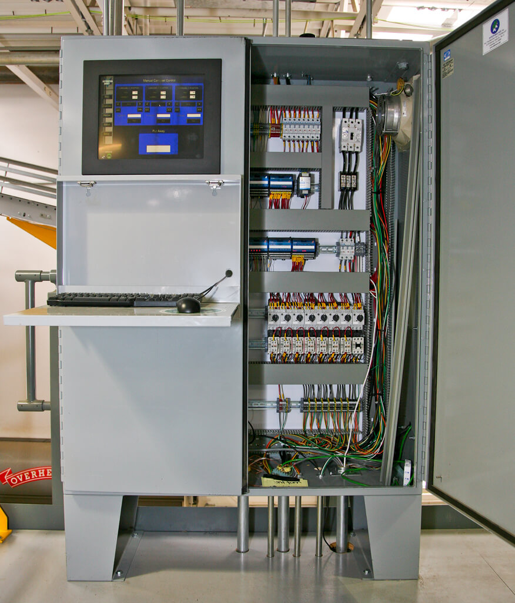

Projetos em Destaque

Usina Pixelada
Simulador interativo de controle de válvulas em plantas industriais. Sistema completo com integração IoT, interface web moderna e controle em tempo real de processos industriais.
Painel IoT - Instrumentação Virtual
Interface virtual conectada a sensores reais via protocolo MQTT. Sistema de monitoramento industrial com integração a banco de dados online e visualização de dados em tempo real.

Sistema de Monitoramento Industrial
Plataforma completa para monitoramento de equipamentos industriais com análise preditiva, alertas inteligentes e integração com sistemas existentes.